Photographie
- Portrait
- Mariage
- Grossesse
- Mode
- Produit
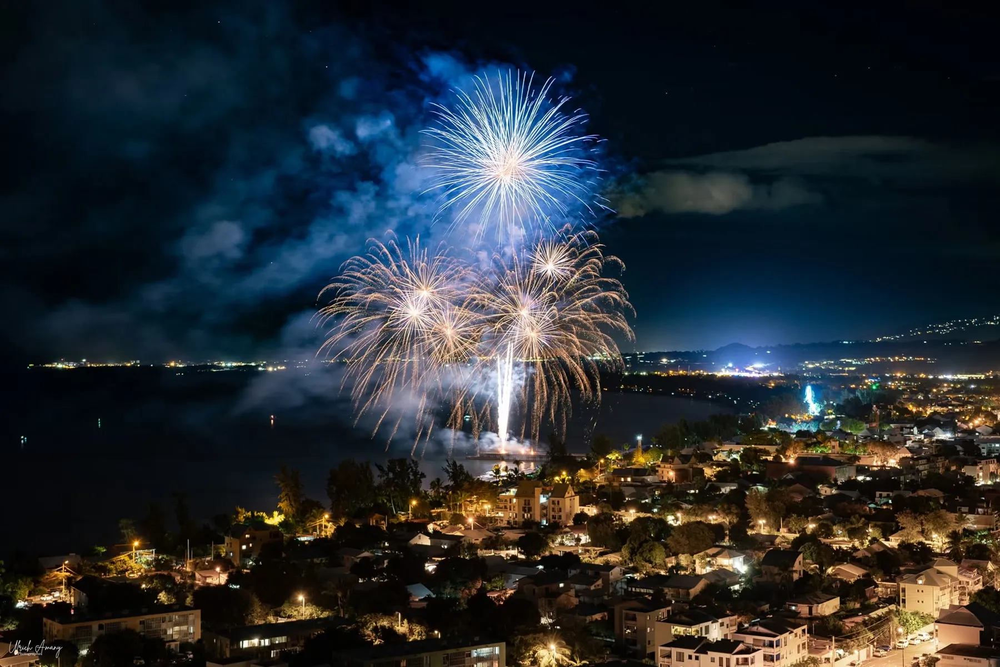
Île de la Réunion · La Possession
Photographe✦Vidéaste✦Event Planner
« Spécialiste Événementiels – Portraitiste – Event Planner »
Photo : feu d'artifice du 14 juillet 2024 à Saint-Paul, signé Ulrich
L'histoire
Depuis plus de vingt ans, Ulrich vit au rythme des soirées et des événements réunionnais. Fort de son expérience dans l'événementiel et l'animation de soirées, il s'est spécialisé dans la photographie, la vidéo et l'organisation d'événements, à l'île de la Réunion et dans l'océan Indien.
« Organisation et planification d'événements qui sauront transformer vos plus folles idées en réalité ! »Ulrich Amany-Savrimoutou, sur sa page, avril 2021
Ce qu'Ulrich vous propose
Organisation et planification d'événements à l'île de la Réunion et dans l'océan Indien, pour donner vie à vos idées les plus folles.
Les nuits du 14 juillet
Chaque 14 juillet, Ulrich capte les feux d'artifice de l'île et partage ses images sur sa page : trois années de suite, trois nuits magiques.
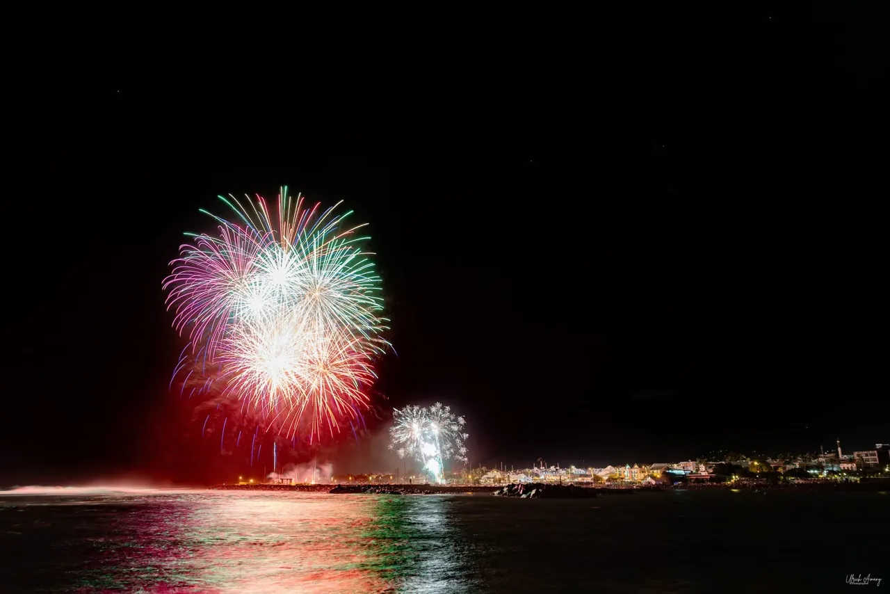
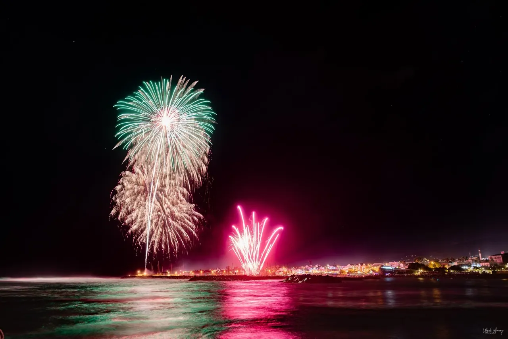
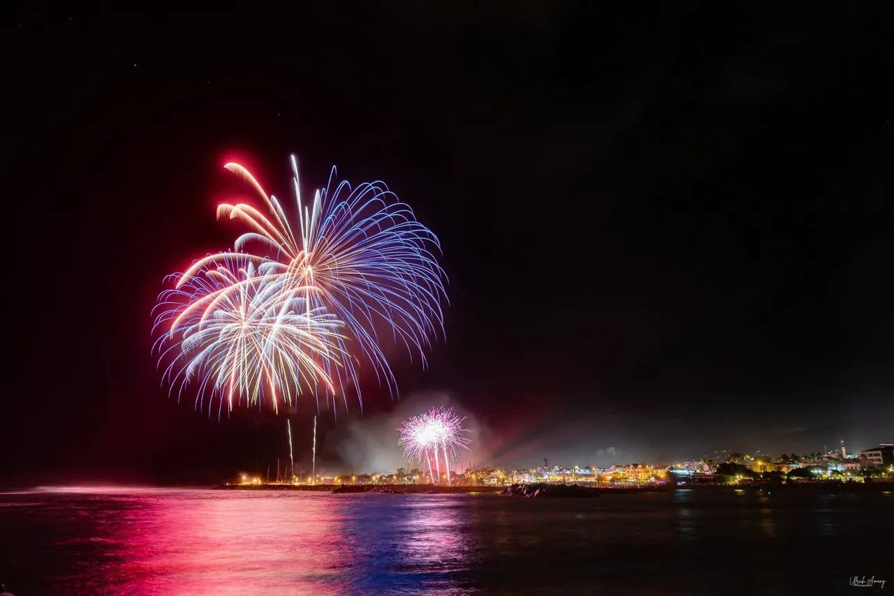
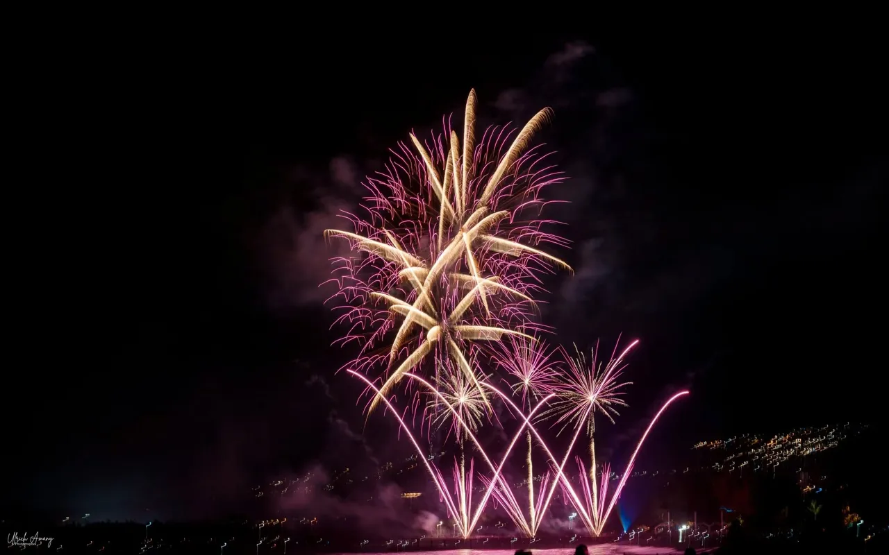
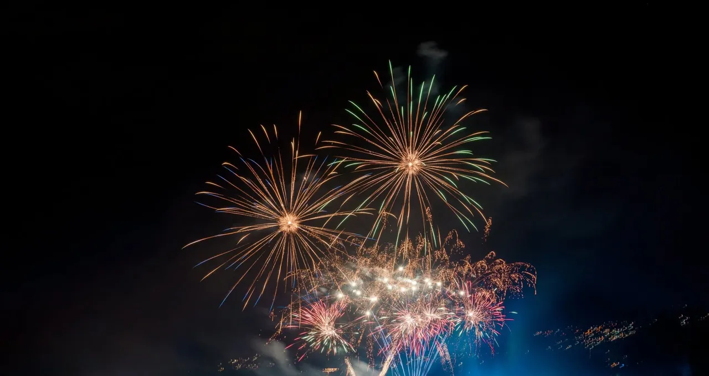
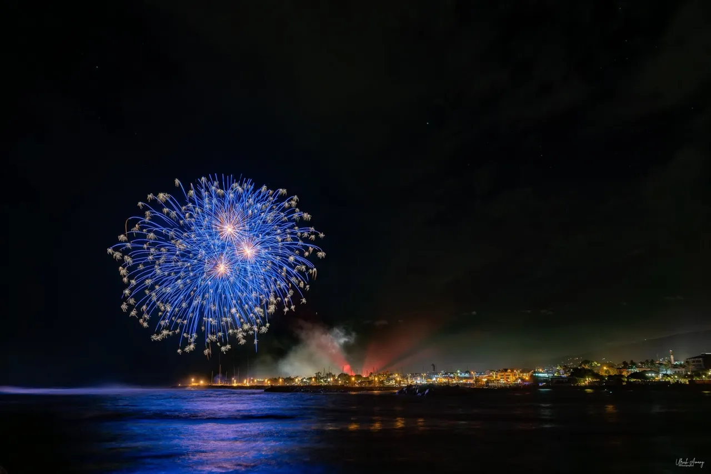
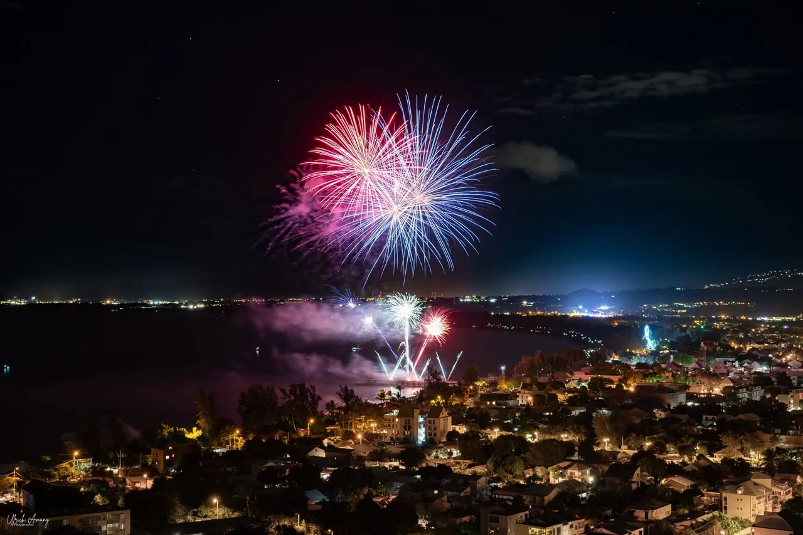
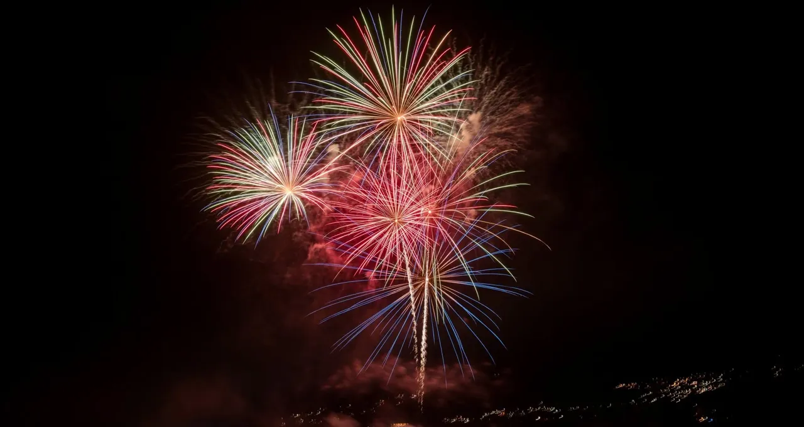
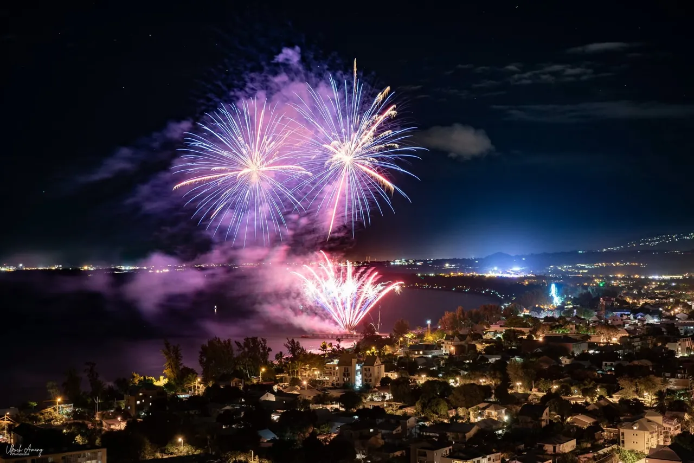
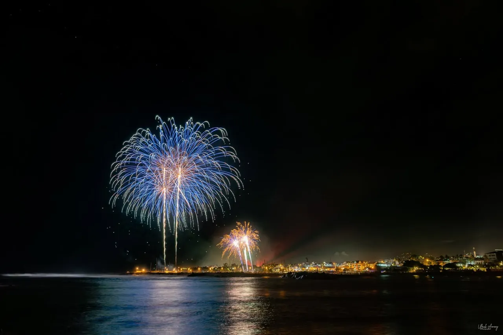
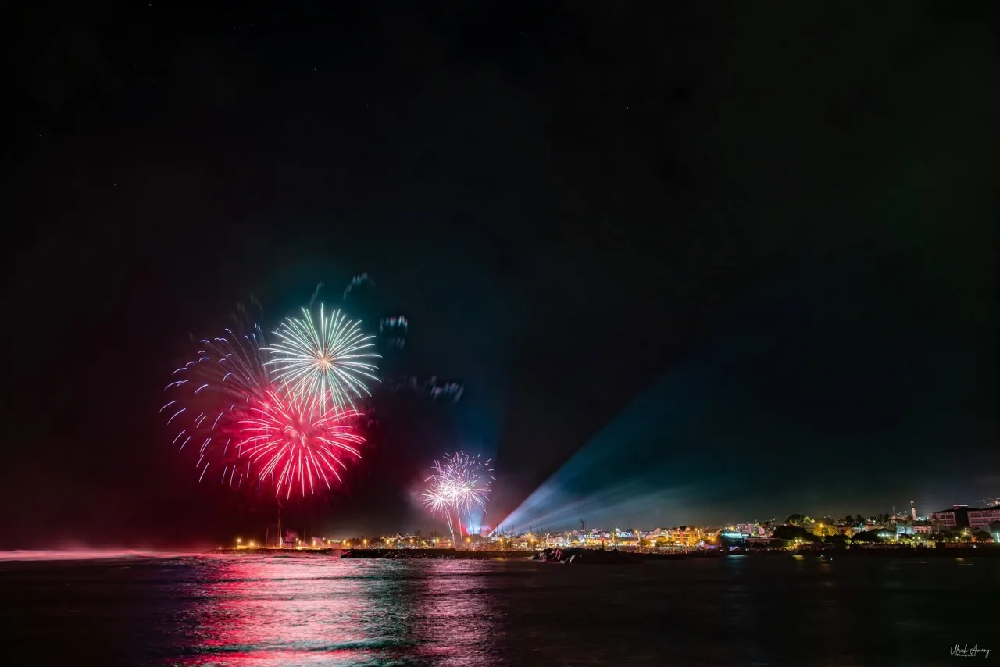
← glissez pour parcourir →
Sur sa page, cet été
« Notre merveilleuse 3ème Dauphine Miss Étang-Salé 2026 »Séance photo publiée le 30 juillet 2026, Saint-Gilles-les-Bains · portraits, mode, glamour : le cœur du métier d'Ulrich.
Idée cadeau
Un portrait, une séance grossesse, un shooting mode : offrez un souvenir qui se garde toute une vie. Un message à Ulrich, et l'idée cadeau prend forme.
Contact
Un message suffit pour partager la date, le lieu et l'ambiance de votre projet.